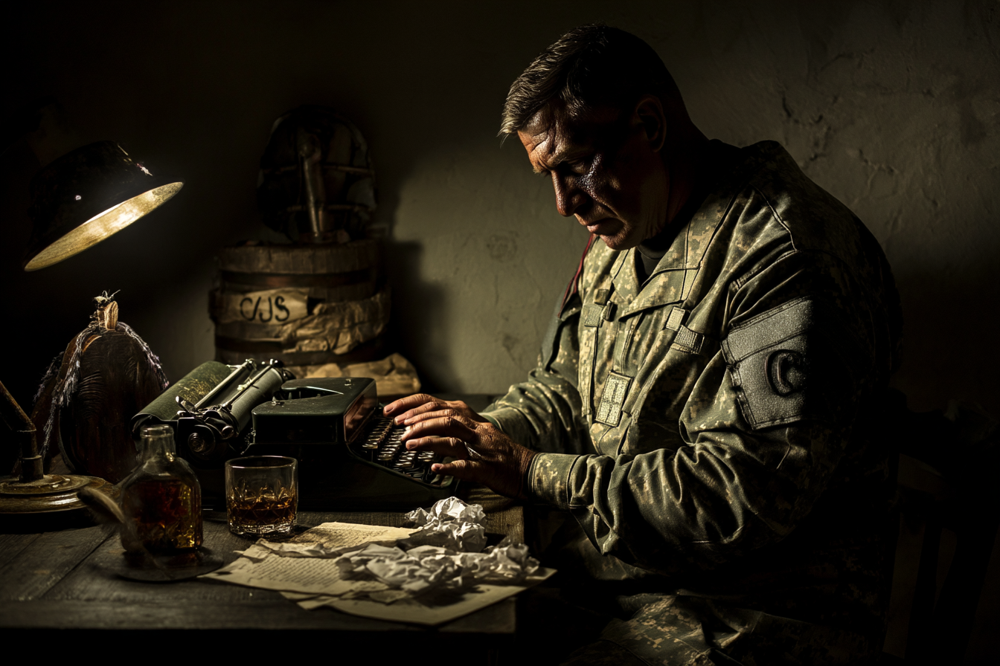

ORDET I MÖRKRET
"Jag har läst dessa ord i tjugo år. Som präst kan jag citera dem ur minnet.
Men efter Sea Glass har de börjat betyda något annat. Något mörkare."

ORDEN HAN LÄSER - CITAT FÖR SULLIVAN
Sullivan har läst Bibeln i tjugo år. Som präst kan han citera den ur minnet. Men efter Sea Glass har vissa citat börjat betyda något annat. Här är citat han återkommer till - i bön, i tvivel, i mörker.
LIDANDE & TVIVEL
"Må den dag förgås då jag blev född, och den natt då det sades: 'En gosse har blivit avlad.'"
— Job 3:3
"Hur länge, HERRE? Skall du för alltid glömma mig? Hur länge skall du dölja ditt ansikte för mig?"
— Psaltaren 13:2
"Min Gud, min Gud, varför har du övergivit mig?"
— Psaltaren 22:2 / Matteus 27:46
Sullivan's anteckning: Det här är Job efter att han förlorat allt. Det här är Jesus på korset. Om även de tvivlade... får då jag?
MÖRKRET & MYSTERIET
"Jorden var öde och tom, och mörker var över djupet, och Guds Ande svävade över vattnet."
— 1 Mosebok 1:2
"Djupet ropar till djupet vid dånet av dina vattenfall; alla dina böljor och vågor har gått över mig."
— Psaltaren 42:8
Sullivan's anteckning: Mörker över djupet. Det är vad jag sett. Men var är Guds Ande nu? Svävar Han fortfarande där? Eller har Han lämnat oss?
SÖKANDE TROTS TVIVEL
"Jag tror. Hjälp min otro!"
— Markus 9:24
"Anden hjälper oss i vår svaghet. Vi vet inte hur vi skall be. Men Anden själv går i förbön för oss med outsägliga suckar."
— Romarbrevet 8:26
Sullivan's anteckning: "Jag tror. Hjälp min otro." Det är allt jag har kvar. Tre ord. Är det nog?
LATIN-CITAT (för mässor och ritualer)
"De profundis clamavi ad te, Domine."
(Ur djupet ropar jag till dig, Herre.)
(Ur djupet ropar jag till dig, Herre.)
— Psaltaren 130:1
"In manus tuas commendo spiritum meum."
(I dina händer överlämnar jag min ande.)
(I dina händer överlämnar jag min ande.)
— Lukas 23:46
Sullivan's anteckning: På latin känns orden mindre personliga. Mindre som lögner. Bara... formelord från en död kyrka.
KAMP & STRID (Military Chaplain)
"HERREN är en krigare, HERREN är hans namn"
— 2 Mosebok 15:3
"Ikläd er hela Guds vapenrustning, så att ni kan stå emot djävulens listiga angrepp"
— Efesierbrevet 6:11
"Kämpa trons goda kamp"
— 1 Timoteusbrevet 6:12
"Ingen soldat i aktiv tjänst flätar in sig i vardagslivets angelägenheter"
— 2 Timoteusbrevet 2:4
"Vår strids vapen är inte av kött och blod, utan gudomligt kraftfulla"
— 2 Korinthierbrevet 10:4
RÄTTVISA & DOM
"Han har låtit dig veta vad som är gott: att öva rätt och älska godhet och att ödmjukt vandra med din Gud"
— Mika 6:8
"Ve dem som kallar det onda gott och det goda ont"
— Jesaja 5:20
"Ska inte hela jordens domare göra rätt?"
— 1 Mosebok 18:25
"Hämnden är min, jag ska vedergälla, säger Herren"
— Romarbrevet 12:19
Sullivan's anteckning: "Ve dem som kallar det onda gott och det goda ont" - Kallar jag cover-ups för "gott"? Dödar oskyldiga för "det större goda"?
ENSAMHET & FÖRTVIVLAN
"Jag är utmattad av mitt ropande, min strupe är torr"
— Psaltaren 69:4
"Ingen bryr sig om min själ"
— Psaltaren 142:5
"Till och med min närmaste vän som jag litade på, har höjt sin häl mot mig"
— Psaltaren 41:10
"Jag är bortglömd som en död, ur sinnet"
— Psaltaren 31:13
VREDE & ILSKA
"Vredgas, men synda inte"
— Efesierbrevet 4:26
"Han drev ut dem alla ur templet och välte borden"
— Johannes 2:15
"Hur länge måste jag se stridens fana och höra basunen ljuda?"
— Jeremia 4:21
Sullivan's anteckning: Även Jesus använde våld ibland. Kanske finns det rättfärdig vrede? Kanske är det det jag känner?
⚠️ SULLIVANS INRE KONFLIKT
Citat han SÄGER (offentligt):
"Kämpa trons goda kamp" (1 Tim 6:12)
Citat han TÄNKER (privat):
"Jag är utmattad av mitt ropande, min strupe är torr" (Ps 69:4)
Citat som plågar honom:
"Ve dem som kallar det onda gott och det goda ont" (Jes 5:20)
Kallar han cover-ups för "gott"? Dödar oskyldiga för "det större goda"?